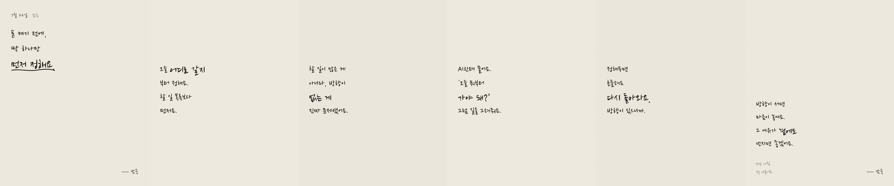
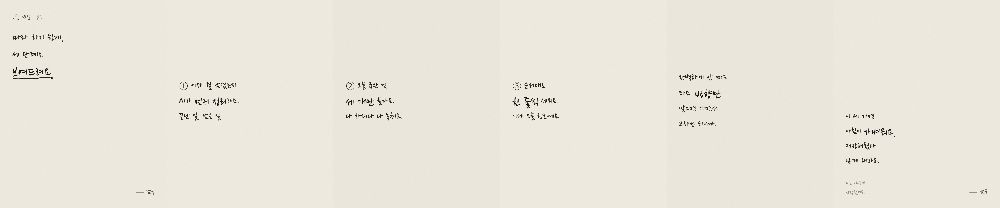
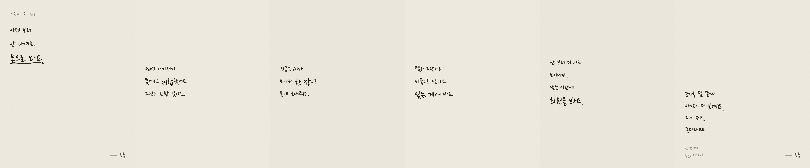
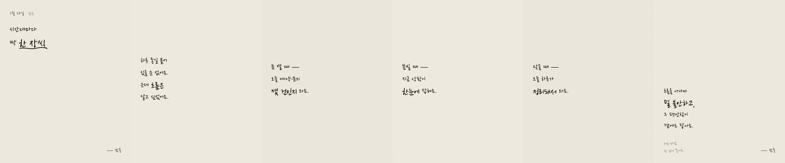
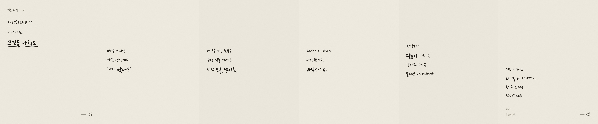

01 아침항로
260721_AI하루01_아침항로
최종 캡션아침마다, 뭘 먼저 봐야 할지 몰랐어요.
폰을 열면 알림이 수십 개. 바쁘게 움직이는데, 정작 오늘 어디로 가는지는 모른 채 하루가 흘러갔어요.
그러다 하나 배웠어요. 바쁜 것과 나아가는 건 다르다는 걸요. 방향이 없으면, 아무리 애써도 제자리더라고요.
그래서 요즘은 아침에 딱 하나만 정해요 — 오늘 어디로 갈지. AI한테 오늘 갈 길을 먼저 물어보고, 회사 현황도 폰으로 한눈에 받아요. 숫자와 할 일이 정리되면, 이상하게 마음도 차분해지더라고요.
방향이 잡히면 조급함이 줄어요. 그리고 그 여유가, 곁에 있는 사람들한테도 조금씩 전해지는 것 같아요.
솔직히 이게 최선인지는 저도 몰라요. 다만 저처럼 아침마다 막막했던 누군가에게, 작은 힌트 하나라도 되면 좋겠어요.
📌 저장해두고 내일 아침에 딱 하나만 정해보세요
💬 여러분은 아침에 뭐부터 보세요? 댓글로 알려주세요
👀 이런 이야기 계속 보려면 팔로우
#AI활용 #AI자동화 #센터운영 #조직운영 #리더십 #아침루틴 #한남동 #웰페리온
02 아침항로정하기
260722_AI하루02_아침항로정하기

최종 캡션아침에 폰을 켜기 전에, 딱 하나만 먼저 정해요 — 오늘 어디로 갈지.
할 일이 많은 게 문제가 아니었어요. 방향이 없는 게 문제였죠. 그래서 AI한테 '오늘 뭐부터 가야 돼?' 하고 물어요. 그럼 오늘 갈 길을 한 줄로 그려줘요.
방향을 먼저 정해두면, 중간에 흔들려도 다시 돌아올 수 있어요. 신기하게도 마음이 덜 급해지고, 그 여유는 곁에 있는 사람들한테도 조금씩 번지는 것 같아요.
솔직히 이게 최선인지는 저도 몰라요. 다만 아침마다 막막했던 누군가에게 작은 힌트가 되면 좋겠어요.
📌 저장해두고 내일 아침에 딱 하나만 정해보세요
💬 여러분은 하루 계획을 언제 세우세요? 아침? 전날 밤? 댓글로 알려주세요
👀 이런 이야기 계속 보려면 팔로우
#AI활용 #AI자동화 #아침루틴 #조직운영 #리더십 #센터운영 #한남동 #웰페리온
03 항로짜는법
260723_AI하루03_항로짜는법

최종 캡션오늘 항로, 이렇게 짜요. 따라 하기 쉽게 세 단계로 보여드릴게요.
① 어제 뭘 남겼는지 AI가 먼저 정리해줘요. 끝난 일과 남은 일.
② 오늘 급한 것 세 개만 골라요. 다 하려다 다 놓쳐요.
③ 순서대로 한 줄씩 세워요. 이게 오늘 항로예요.
완벽하게 안 짜도 돼요. 방향만 맞으면 가면서 고치면 되니까요. 이렇게 아침을 정리하면, 이상하게 마음도 한결 가벼워져요.
저도 아직 배우는 중이라, 더 좋은 방법이 있으면 배우고 싶어요. 저처럼 아침이 막막했던 분께 작은 힌트가 되면 좋겠어요.
📌 저장해두고 내일 아침에 따라 해보세요
💬 여러분이 가장 자주 미루는 일은 뭐예요? 댓글로 알려주세요
👀 이런 이야기 계속 보려면 팔로우
#AI활용 #AI자동화 #할일관리 #아침루틴 #조직운영 #센터운영 #한남동 #웰페리온
04 통합보고
260724_AI하루04_통합보고

최종 캡션회사 현황을 이제 보러 안 다녀요. 폰으로 와요.
전엔 여기저기 물어보고 취합했어요. 그것도 한참 일이었죠. 지금은 AI가 모아서 한 장으로 폰에 보내줘요. 텔레그램이랑 카톡으로, 있는 자리에서 바로 봐요.
안 보러 다녀도 보이니까, 남는 시간에 회원을 봐요. 숫자를 덜 쫓게 되니, 오히려 사람이 더 잘 보이더라고요. 그게 제일 좋아요.
저도 아직 익히는 중이지만, 이렇게 생긴 여유 하나가 곁에 있는 누군가에게도 닿으면 좋겠어요.
📌 저장해두고 참고해보세요
💬 여러분은 회사 현황, 아직 사람이 취합하세요? 어떻게 보세요? 댓글로 알려주세요
👀 이런 이야기 계속 보려면 팔로우
#AI활용 #AI자동화 #업무자동화 #조직운영 #리더십 #센터운영 #한남동 #웰페리온
05 시간대별
260725_AI하루05_시간대별

최종 캡션오픈·피크·마감마다 딱 한 장씩 와요.
하루 종일 붙어 있을 순 없어요. 근데 흐름은 알고 싶었어요. 그래서 문 열 때·붐빌 때·닫을 때, 시간대마다 현황 한 장이 자동으로 와요.
흐름을 아니까 덜 불안해요. 마음이 편하면, 곁에 있는 직원들한테도 그 여유가 전해지는 것 같아요.
저도 계속 다듬는 중이에요. 더 나은 방법 아시면 배우고 싶어요.
📌 저장해두고 참고해보세요
💬 하루 중 어느 시간이 제일 궁금하세요? 댓글로 알려주세요
👀 이런 이야기 계속 보려면 팔로우
#AI활용 #AI자동화 #매장운영 #조직운영 #센터운영 #한남동 #웰페리온
06 설정공개
260728_AI하루06_설정공개
최종 캡션제가 실제로 넣어둔 설정, 그대로 공개해요. 숨길 거 없어요.
잘 감춰봤자 저만 알아요. 같이 나눠야 저도 배우죠.
① 아침마다 '오늘 항로 짜줘'라고 시켜놨어요.
② 시간대마다 현황 한 장 자동으로 보내라고요.
거창한 거 아니에요. 한 줄씩 시켜두면 매일 알아서 와요. 이런 걸 나누는 게 저한테도 배움이 되고, 누군가에겐 작은 시작점이 되면 좋겠어요.
📌 따라 하기 좋게 저장해두세요
💬 여러분은 AI에 뭘 시켜두셨어요? 더 좋은 설정 있으면 알려주세요
👀 이런 이야기 계속 보려면 팔로우
#AI활용 #AI자동화 #프롬프트 #업무자동화 #조직운영 #센터운영 #한남동 #웰페리온
07 놓친것챙김
260729_AI하루07_놓친것챙김
최종 캡션잊어도 괜찮아요. 챙겨주니까요.
사람이라 깜빡해요. 근데 놓치면 손해는 크죠. 이젠 AI가 먼저 '이거 안 하셨어요' 하고 알려줘요. 미뤄둔 일, 답 안 한 문의를 조용히 짚어줘요.
잊는 건 죄가 아니더라고요. 안 챙기는 게 문제였죠. 덜 놓치니 마음이 놓이고, 그만큼 곁에 있는 사람한테 더 마음을 쓰게 돼요.
저도 아직 배우는 중이라, 여러분은 어떻게 챙기시는지 궁금해요.
📌 저장해두고 참고해보세요
💬 여러분은 자꾸 놓치는 일, 뭐가 있으세요? 어떻게 챙기세요? 댓글로 알려주세요
👀 이런 이야기 계속 보려면 팔로우
#AI활용 #AI자동화 #일정관리 #조직운영 #리더십 #센터운영 #한남동 #웰페리온
08 이게최선일까
260730_AI하루08_이게최선일까

최종 캡션솔직히, 이게 최선인지 저도 몰라요.
자랑하려는 게 아니에요. 고민을 나누고 싶어요. 매일 쓰지만 가끔 생각해요 — '이게 맞나?' 더 잘 쓰는 분들은 분명 있을 텐데, 저만 모를 뿐이죠.
그래서 이 시리즈를 시작했어요. 배우려고요. 확신보다 질문이 나은 것 같아요. 계속 물으면 나아지니까. 그리고 서로 나누다 보면, 다 같이 조금씩 나아지는 것 같아요.
📌 저장해두고 함께 고민해요
💬 제가 놓치고 있는 게 있다면 알려주세요. 진짜 궁금해서요
👀 이런 이야기 계속 보려면 팔로우
#AI활용 #AI자동화 #조직운영 #리더십 #일하는법 #센터운영 #한남동 #웰페리온
09 여러분은
260731_AI하루09_여러분은
최종 캡션이번엔 제가 물어볼게요. 여러분은 어떻게 쓰세요?
혼자 하면 제자리예요. 같이 하면 멀리 가고요.
아침을 어떻게 여세요? 저는 항로부터예요.
회사를 어떻게 보세요? 저는 폰 한 장이요.
댓글 주시면 제가 진짜 써보고, 다음에 결과 알려드릴게요. 당신의 한 수가 궁금해요. 같이 나누면, 다 같이 조금 더 멀리 갈 수 있을 거예요.
📌 저장해두고 나중에 다시 봐요
💬 당신의 AI 활용 한 수, 댓글로 알려주세요. 하나하나 읽어요
👀 이런 이야기 계속 보려면 팔로우
#AI활용 #AI자동화 #집단지성 #조직운영 #리더십 #센터운영 #한남동 #웰페리온